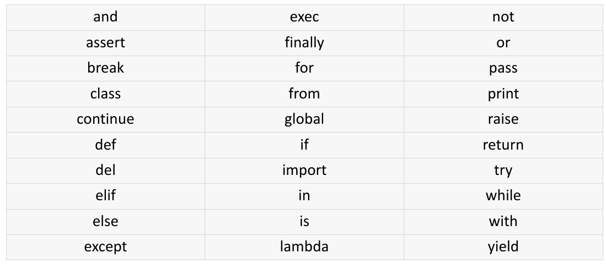

Python essentiel pour la Data Science#
Ce qu’on couvre (et ce qu’on ne couvre pas)#
Cette leçon n’est pas un cours de Python. C’est un kit de survie : les concepts Python dont vous avez besoin pour le reste de la formation. Si vous savez déjà programmer en Python, survolez — vous connaissez probablement tout ça. Si Python est nouveau pour vous, cette leçon pose les bases.
Généralités#
Python est un langage créé en 1991 par Guido van Rossum. Quelques caractéristiques clés :
Open source (Python Software Foundation License)
Interprété : pas de compilation, exécution directe
Multi-paradigme : impératif, fonctionnel, orienté objet
Typage dynamique : pas besoin de déclarer les types
Syntaxe épurée : se lit presque comme de l’anglais
Multiplateforme : Linux, macOS, Windows
Si vous demandez à un data scientist quel langage il utilise, la réponse sera Python dans 8 cas sur 10. Ce n’est pas le langage le plus rapide, ni le plus élégant. Mais il a trois avantages décisifs :
Une courbe d’apprentissage douce. Vous pouvez être productif en quelques jours, même sans background en informatique.
Un écosystème massif pour la data. Des dizaines de bibliothèques spécialisées, maintenues par des communautés actives.
Le langage du prototypage rapide. En data science, on explore, on teste, on jette, on recommence. Python est parfait pour ça.
Sur le terrain
R reste utilisé en statistiques académiques et en biostatistique. Julia monte pour le calcul haute performance. Mais pour un projet ML classique en entreprise, Python est le choix par défaut — et c’est ce que vos futurs collègues data scientists utiliseront.
Les environnements de développement#
Jupyter Notebook#
Environnement de développement et d’exécution de vos applications Python. Très utilisé en data science pendant la phase exploratoire — on y consacre un chapitre dédié.
IDEs pour le code de production#
IDE |
Éditeur |
Licence |
Points forts |
|---|---|---|---|
PyCharm |
JetBrains |
Community (gratuit) ou Pro |
Complétion avancée, débogueur intégré, refactoring |
VS Code |
Microsoft |
Open source |
Léger, extensible, intégration Git, terminal intégré |
JupyterLab |
Projet Jupyter |
Open source |
Interface navigateur, orienté notebooks, explorateur de fichiers |
En pratique, le cycle typique c’est : explorer en notebook → figer le code qui marche dans un script .py dans un IDE. On verra ça en détail dans le module sur la mise en production.
Variables et types de base#
Python est typé dynamiquement : pas besoin de déclarer le type d’une variable, Python le déduit tout seul.
age = 29 # int (entier)
taux_survie = 0.38 # float (nombre décimal)
port = "Southampton" # str (texte)
a_survecu = True # bool (vrai/faux)
Pourquoi c’est important en data science ? Parce que chaque colonne de votre dataset a un type. Si Age est stocké comme du texte au lieu d’un nombre, votre modèle ne pourra rien en faire. On y reviendra souvent.
# Vérifier le type
type(taux_survie) # → <class 'float'>
# Convertir (casting)
age_texte = str(age) # "29"
taux_int = int(taux_survie) # 0 — int() tronque vers zéro (supprime la partie décimale), pas d'arrondi
# int(3.9) → 3, int(-2.7) → -2. Pour arrondir : round(taux_survie)
Les structures de données#
Les listes : votre couteau suisse#
# Une liste de classes de voyage
classes = ["1re classe", "2e classe", "3e classe", "équipage"]
# Accéder par index (ça commence à 0)
classes[0] # → "1re classe"
classes[-1] # → "équipage" (le dernier)
# Découper (slicing) — la borne supérieure est EXCLUE
classes[1:3] # → ["2e classe", "3e classe"] (indices 1 et 2, pas 3)
# Modifier
classes.append("officiers")
len(classes) # → 5
Les dictionnaires : associer des clés à des valeurs#
# Un passager décrit comme un dictionnaire
passager = {
"PassengerId": 1,
"Name": "Braund, Mr. Owen Harris",
"Pclass": 3,
"Sex": "male",
"Age": 22,
"Survived": 0
}
# Accéder
passager["Name"] # → "Braund, Mr. Owen Harris"
passager["Cabin"] # → KeyError ! La clé n'existe pas
passager.get("Cabin", "inconnu") # → "inconnu" (accès sûr avec valeur par défaut)
# Ajouter / modifier
passager["Fare"] = 7.25
Lien avec la data science
Un dictionnaire, c’est conceptuellement une ligne de votre dataset : chaque clé est un nom de colonne, chaque valeur est la donnée. Quand Pandas charge un CSV, il crée en interne quelque chose de similaire (en beaucoup plus optimisé).
Conditions et boucles#
if / elif / else#
age = 25
if age is None:
print("Âge inconnu")
elif age < 18:
print("Enfant")
else:
print("Adulte")
Boucle for#
ports = ["Southampton", "Cherbourg", "Queenstown"]
for port in ports:
print(f"Traitement de {port}...")
Le f"..." est une f-string : elle insère la valeur de la variable directement dans le texte. Vous en verrez partout.
Les compréhensions de liste#
C’est la version compacte d’un for + append. Très utilisé en data science :
# Version classique
ages_valides = []
for age in [29, None, 35, 4, None, 62]:
if age is not None:
ages_valides.append(age)
# Version compréhension (même résultat)
ages_valides = [age for age in [29, None, 35, 4, None, 62] if age is not None]
# → [29, 35, 4, 62]
Les fonctions#
Une fonction regroupe du code qu’on réutilise. En data science, vous allez écrire des fonctions pour chaque transformation que vous appliquez à vos données.
def classer_age(age):
"""Classe un passager selon son âge."""
if age is None:
return "inconnu"
elif age < 12:
return "enfant"
elif age < 18:
return "adolescent"
elif age < 60:
return "adulte"
else:
return "senior"
# Utilisation
classer_age(8) # → "enfant"
classer_age(None) # → "inconnu"
Sur le terrain
En data science, les fonctions servent surtout à deux choses : nettoyer et transformer des données. Si vous vous retrouvez à copier-coller le même bloc de code 3 fois, c’est le moment d’en faire une fonction. Pas avant — inutile de sur-architecturer un notebook exploratoire.
Les imports#
Python est modulaire : les fonctionnalités sont réparties dans des modules qu’on importe.
# Importer un module entier
import numpy as np
# Importer une fonction spécifique
from sklearn.model_selection import train_test_split
# Les alias standards (tout le monde les utilise)
import numpy as np
import pandas as pd
import matplotlib.pyplot as plt
import seaborn as sns
Ces alias (np, pd, plt, sns) sont des conventions. Utilisez-les — c’est ce que tous les tutoriels, la documentation et vos collègues attendent.
Ce qui change par rapport aux autres langages#
Si vous avez déjà programmé dans un autre langage, voici les différences qui surprennent :
Concept |
Python |
Java / C# |
|---|---|---|
Blocs de code |
Indentation (pas d’accolades) |
|
Typage |
Dynamique |
Statique |
Point-virgule |
Non |
Oui |
|
|
|
Commentaires |
|
|
Le piège classique : l’indentation compte. Un espace en trop ou en moins, et votre code ne fonctionne plus. Utilisez 4 espaces par niveau d’indentation (la convention Python).
Identifiants et conventions de nommage#
Les identifiants commencent par une lettre ou un
_, suivis par 0 ou plusieurs lettres ou chiffresUn identifiant est sensible à la casse (
age≠Age)Seul le nom d’une classe commence par une majuscule (
MonModele)Les variables et fonctions utilisent le snake_case (
mon_modele,classer_age)Un identifiant qui démarre par un
_est considéré comme privéLes identifiants encadrés par un double underscore (
__init__,__len__,__str__) sont des méthodes spéciales (dites « magic methods ») — ce sont des conventions du langage pour définir des comportements standard (constructeur, longueur, affichage…)

Point clé
Vous n’avez pas besoin de maîtriser Python pour commencer le ML. Vous avez besoin de savoir manipuler des variables, des listes, des dictionnaires, écrire des boucles et des fonctions. Le reste viendra avec la pratique. Si un concept Python vous bloque pendant la formation, demandez — c’est normal.